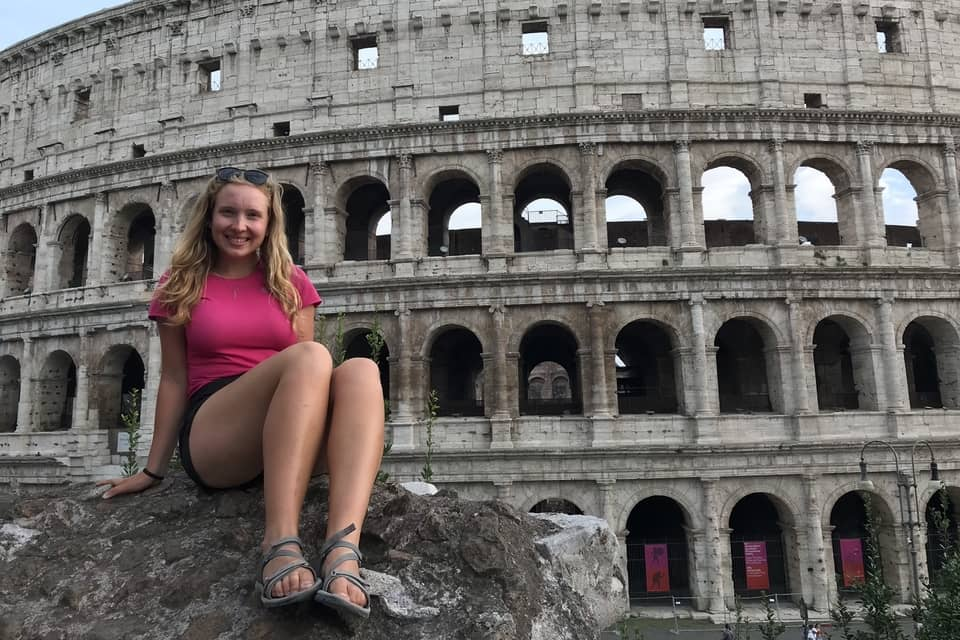
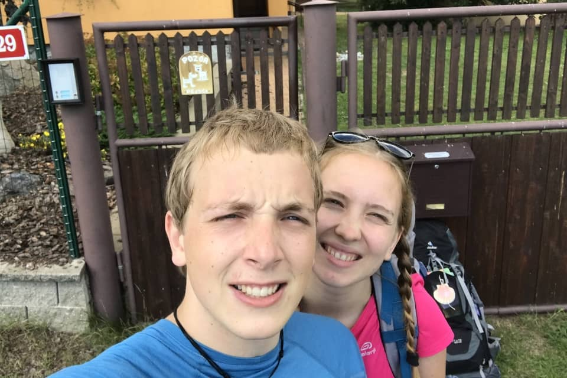
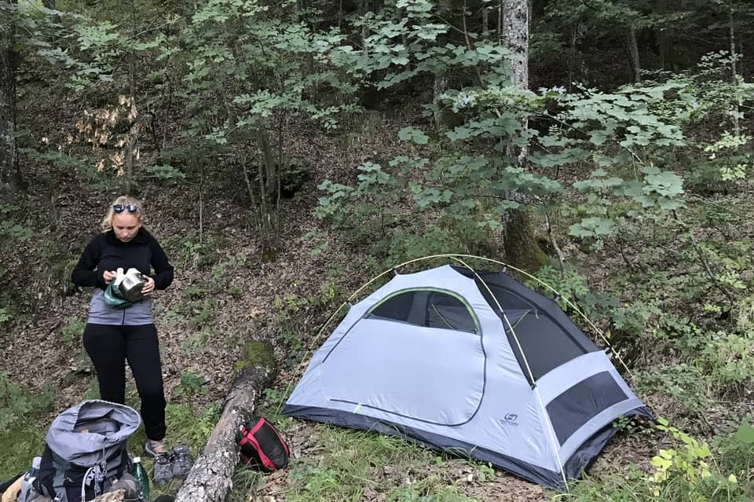
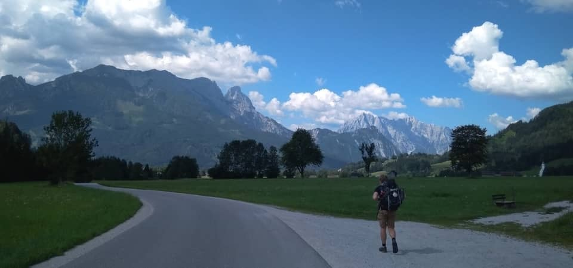
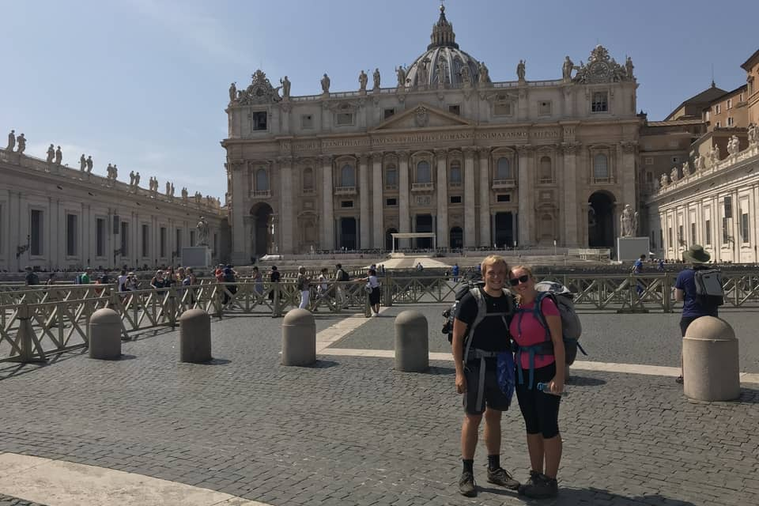

Dozvěděli jsme se, že ses vydala na pouť do Říma, co tě k tomuto rozhodnutí vedlo? Putovala jsi sama nebo s někým?
Rozhodnutí pro Řím předchází pouť, kterou jsem absolvovala o rok dříve. Rok před Římem jsem totiž šla Svatojakubskou pouť do Santiaga de Compostela se svou kamarádkou.
My však chtěli jít Slovanskou cestu ve šlépějích sv. Cyrila a Metoděje, která nebyla značená vůbec. Proto jsme museli celou cestu plánovat sami a doufat, že potkáme dobré lidi, kteří nám budou chtít pomoci.
Hned druhý den jsme potkaly kluka z Plzně, který se k nám přidal a došel s námi až k oceánu, nejzápadnějšímu pobřeží Pyrenejského poloostrova, kterému se dříve říkalo konec světa. S oním klukem z Plzně jsme si rozuměli natolik, že jsme spolu začali chodit. A proto, když jsme uvažovali, co budeme dělat o dalších prázdninách, chtěli jsme být spolu a pouť do Říma nám připadala jako dobrá volba.
Proč zrovna Řím?
Pouť do Říma je totiž jedna ze tří hlavních křesťanských poutí, tzv. Trojlístek – Santiago de Compostela, Řím, Jeruzalém. Jeruzalém zatím ale vážně neplánujeme.

Jak vypadala Vaše příprava na cestu do Říma? Byla něčím speciální?
Příprava, ale i samotná cesta byla daleko náročnější než pouť do Santiaga. V Santiagu na Vás totiž čeká značená trasa, skoro každý den potkáte nějaký obchod i ubytovny se sprchou a postelí. Řím je zcela odlišný, je pár známých tras například francouzská, anglická...
Tam, kde jsme pomoct očekávali, většinou nepřišla. A naštěstí i naopak. Jde pouze o to, jestli chce člověk pomoci, nebo ne.
My však chtěli jít Slovanskou cestu ve šlépějích sv. Cyrila a Metoděje, který nebyla značená vůbec. Proto jsme museli celou cestu plánovat sami a doufat, že potkáme dobré lidi, kteří nám budou chtít pomoci. Mezi věcmi, které jsme měli, byl třeba stan a vařič s ešusem, jinak pro mě třinácti a pro Honzu sedmnáctikilová krosna a dobré boty, které nás odnesou. 😊
Mohla bys nám trochu popsat, jak vypadal Váš den? Kde jste byli ubytováni, kolik cca kilometrů jste denně ušli?
Ráno jsme se snažili vstávat co nejdříve, abychom stihli ujít co nejvíce kilometrů před horkým polednem. Takže jsme ráno sbalili stan, poté jsme ušli asi 10 km a dali si snídani, pak jsme ušli dalších 10 km, dali si přestávku a pak došli, co bylo potřeba.
Možná to bude znít jako fráze, ale pro mě je cílem Cesta. Když to srovnám s cestou do Říma, žili jsme naprosto přítomným okamžikem a aktuálními problémy, které nám cesta přinášela.
Poté jsme začali hledat třeba faru, kde by nás nechali přespat alespoň na zahradě, obstarali si jídlo, požádali o vodu nebo místo, kde bychom si mohli vyprat, naplánovali trasu na další den, napsali deník, šli spát a další den nanovo. Většinou jsme spali na farách na zemi nebo ve stanu. Někdy se nám i třeba poštěstilo a spali jsme na postelích. Denně jsme se snažili ujít minimálně třicet kilometrů.

Mohla bys nám prozradit Váš největší zážitek? Co Vás nejvíce překvapilo a co na druhou stranu zarazilo?
Každá země nám nabídla obrovské množství zážitků a poznání úžasných, ale i horších lidí. Jedním ze zajímavých momentů byl ten, když jsme v parném dni došli do města na severu Itálie – Udine. Potřebovali jsme si vyprat věci a podle mapy tam bylo asi 15 far. Doufali jsme tedy, že alespoň na jedné místo na zahradě najdeme.
Často se pouť přirovnává k životu, honíme se pořád za nějakým cílem a když do něj dorazíme, uvědomíme si, že už je konec a vlastně ta cesta, jak jsme k ní došli, byla daleko důležitější.
Asi tři hodiny jsme chodili po rozpálených ulicích města a zvonili na fary. Bohužel nám nikdo neotevřel a když ano, tak se na nás pan farář koukal jen z přivřených okenic a řekl, ať s žádnou pomocí nepočítáme. Šli jsme tedy dál a dál a sil už nám velmi ubývalo, poslední možnost byla církevní škola.
Cestou ke škole jsme potkali nějakou paní v autě, která se na nás nádherně (andělsky) usmívala a řekli jsme si, že ač se nikdy neptáme lidí na ulici, nemáme co ztratit. Ona si vyslechla náš příběh a moc nám chtěla pomoci. Zavolala tedy svého syna, který o nás zpočátku nechtěl slyšet. (Představte si italský rozhovor matka-syn, který se o něčem dohaduje.) Nakonec její syn Paulo řekl, že kdyby něco sehnal, zavolá nám. Šli jsme tedy dál. Došli jsme do školy, ze které nás okamžitě vyhodili, i když kolem školy bylo obrovské množství trávníku, kde by se dal postavit stan. Bylo už pozdě, z cesty a horka jsme byli unaveni, z neustálého odmítání a vyhánění otráveni a demotivováni.
Poutě bych doporučila úplně každému, člověk pozná sám sebe a své limity, zjistí, že jeho tělo je neskutečně schopné. Má čas poslouchat Toho nad námi, sebe, udělá si v hlavě pořádek a taky se na sebe koukne trošku z vrchu a nevidí své problémy tak megalomanské.
I tak jsme se pomalu chystali znovu nasadit krosny, putovat dál za město a najít kousek louky na přespání. Najednou Honzovi volalo neznámé číslo. Byl to Paulo, který pro nás nesehnal kousek louky pro stan, ale rovnou celý byt. To pro nás byla hrozná úleva. V kontrastu pětisettisícového městě plného zavřených dveří se našel někdo, kdo se nad námi slitoval a prokázal nám dobrou vůli. Naše nálady letěly vzhůru a my se opět usmívali. S Paulem a jeho rodinou jsme se spřátelili, dokonce nás doporučil svým známým, kteří nás přijali následující den. S vědomím, že už nás v cíli očekává někdo s dobrým srdcem a naprosto nezištně nám pomáhá, se putovalo mnohem snáz.
Jak se k této cestě postavil Tvůj přítel? Pokud vím, tak je nepraktikující křesťan, nebyla v průběhu cesty víra „bariérou“?
Víra bariérou rozhodně nebyla, oba jsme věřící, jen on moc nemá rád církev jako instituci. Já sama byla mnohdy překvapená z toho, že na místech, kde lidé pomoci mohli, nás vyhodili a tam, kde sami neměli, rozdali by se pro nás. Tato pouť byla pro nás obrovskou zkušeností. Odnesli jsme si z ní, že nemůžeme lidi kastovat do skupin, ve kterých se pohybují. Tam, kde jsme pomoct očekávali, většinou nepřišla.
Snažím se překonávat své strachy a myslím, že tím se cíli člověk nejvíce přibližuje.
A naštěstí i naopak. Jde pouze o to, jestli chce člověk pomoci, nebo ne. Nechci, aby to vyznělo, že jsme počítali s tím, že nás lidé budou ubytovávat a starat se o nás. Neměli jsme nic domluvené. Zazvonili jsme a člověk se musel okamžitě rozhodnout, zda nám pomoci chce, nebo ne. O to více nás hřála láska lidí k lidem, která nás překvapovala každý den a musím říct, že jsme byli opravdu pod Ochranou. 😊
Jakou roli hraje víra a život z ní v tom, co děláš, ve Tvém osobním životě?
Víra je pro mě velmi důležitá, snažím se nejen prosit, ale i děkovat. Každý den děkuji za to, že máme anděly strážné. A v každodenním životě se snažím pomáhat druhým a být citlivá na ty chvíle, kdy mě někdo potřebuje, abych je nezaspala.

Tématem letošního Absolventského Velehradu je „Co je cíl?“ Co je podle tebe cílem? Jaký je Tvůj životní cíl?
Možná to bude znít jako fráze, ale pro mě je cílem Cesta. Když to srovnám s cestou do Říma, žili jsme naprosto přítomným okamžikem a aktuálními problémy, které nám cesta přinášela. Často se pouť přirovnává k životu, honíme se pořád za nějakým cílem a když do něj dorazíme, uvědomíme si, že už je konec a vlastně ta cesta, jak jsme k ní došli, byla daleko důležitější.
Co jsou Tvé aktuální „malé“ cíle? Co bylo tvým cílem v minulosti a jak to vnímáš teď? Jak se to v průběhu času mění?
Můj malý každodenní cíl je překonávat mou lenost. Je pravda, že když se zamyslím nad mými cíli v minulosti, byly daleko povrchnější. Myslím si, že časem se všechny naše cíle opravdu osekají jen na ty nejdůležitější pilíře hodnot, které máme. A ten nejdůležitější cíl je pocit toho, že jsem svůj život odžila v pravdě, nikomu jsem záměrně neubližovala a mé ego mě nesežralo, aby mě do toho nebe taky chtěli. :D
Plánujete nějakou další pouť/cestu?
Od poutí už si dáváme alespoň na nějaký čas přestávku, ale na prázdniny Honza plánuje jet do Indie jako dobrovolník a nejspíš objedeme autem Island a těšíme se na obdivování jeho čarokrásné přírody.
Co pro dosažení svého cíle pravidelně děláš, jak se k němu přibližuješ?
Jak říká VKH Ostrava: Vytěž ze sebe to nejlepší! Snažím se překonávat své strachy a myslím, že tím se cíli člověk nejvíce přibližuje. Protože jak říká p. František: “Stojaté vody se nejvíc kazí!”

Co bys vzkázala mladým absolventům – účastníkům Absolventského Velehradu? Doporučila bys jim takovou pouť?
Nevím, zda mám věk na to, něco vzkázat. Ale co bych vzkázala i sobě: Dávejme si velké cíle, ať máme k čemu směřovat. Poutě bych doporučila úplně každému, člověk pozná sám sebe a své limity, zjistí, že jeho tělo je neskutečně schopné. Má čas poslouchat Toho nad námi, sebe, udělá si v hlavě pořádek a taky se na sebe koukne trošku z vrchu a nevidí své problémy tak megalomanské.
Nějaká věta na závěr?
Kdyby se někdo z Vás rozhodl jít taky na nějakou pouť, ať neváhá, užije si to a v případě dotazů se mi klidně ozve!
Děkujeme moc Marušce za rozhovor!